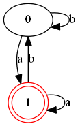

话不多说, 这是一个将正则表达式转化为DFA状态图的小工具, 是在做编译原理实验的时候在基础实验之上进行扩展的.
demo:
./main -r “(a|b)*a” -o test.png

下面是文档和链接, 欢迎 star哦.
在线文档
@author 姬小野
点击查看文档与Demo
Github地址
项目依赖
此项目的图片生成部分依赖于项目 graphviz, 这是他们的主页
致谢~
如何安装 graphviz 可以参考这篇文章
致谢~
请安装好graphviz并配置好环境变量之后再使用本程序的画图功能. 字符串匹配功能不受影响
配置好环境的标志是终端命令
dot --version 或者 circo --version 能正确执行.
确认操作无误可重启电脑再尝试
程序结构
在工程根目录下, 执行 make 编译程序, 可得到目标文件 main.exe
tmp 文件夹为临时文件, 保存了中间过程产生的nfa, dfa以及dot文件.
image 文件夹为图片文件夹, 保存了生成的图片
如果出现make时无法识别.o文件的情况, 可以尝试make -f Makefile-win
正则表达式支持
支持以下简单规则
1
2
3
4
5
6
|
( )
*
+
[]
a-z
|
|
如 [0-9a-zA-Z]+@(gmail|qq|163).com
注意: 输入字符过多时比如上面的re请不要开启 -g 的 d 参数. 因为边和点太多无法绘制出来. 注意, 默认不适用-g是会绘制三种图片的. 所以这种情况需要指定-g m 或者 -g nm才会正确执行程序. 不然会一直尝试绘制nfa图
参数解析
执行 make 得到目标程序
输入 ./main -h 得到参数提示
1
2
3
4
5
6
7
8
9
10
11
12
13
14
15
16
17
18
19
20
21
22
23
24
25
26
27
28
29
|
Usage: ./main [options hir:s:o:p:g:] [:argument]
options:
-h
说明: 打印提示信息并退出程序
-i
说明: 手动输入正则表达式 和 待匹配字符串
-r <re_exp>
说明: 作为模式的正则表达式
-s <string>
说明: 待匹配的字符串
-o <png_file>
说明: 要输出的png文件路径
-p <pattern_name>
说明: 输出的状态图要布局的模式: circo | dot | neato | twopi | fdp | patchwork
-g <graph_type>
说明: 要画的状态图的类型, 默认为三个类型: n | d | m, 可连起来写成字符串如 nm. 他们分别为 nfa | dfa | mindfa
demos:
./main -i
说明: 手动输入正则表达式 和 待匹配字符串, 程序打印匹配结果
./main -r "(ab*|b)*ca*" -s aabbacaa
说明: 用正则表达式 (ab*|b)*ca* 去匹配字符串 aabbacaa
./main -r "(ab*|b)*ca*" -o test.png
说明: 将 正则表达式 (ab*|b)*ca* 转化到 test_nfa.png, test_dfa.png, test_mindfa.png 系列图片
./main -r "(ab*|b)*ca*" -o test.png -p dot
说明: 用 dot模式 生成状态图
./main -r "(ab*|b)*ca*" -o test.png -p dot -g nm
说明: 指定生成 nfa 和 mindfa 状态图
good luck!
|